Fotogalerij
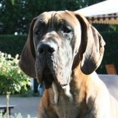
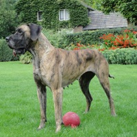 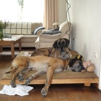
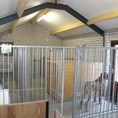
Home
Over ons
Nieuws
Reuen
Bullus uit het Doggenwalhalla
Teven
Yetta uit het Doggenwalhalla
Qubi vom Dünner Land
Pups
Informatie
A-nest
B-nest
Herinnering
Antje uit het Doggenwalhalla
Diesel van de Maginaris
Ianus van de Maginaris
Zorba van de Maginaris
Fotogalerij
Contact
Links

 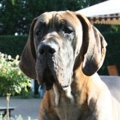
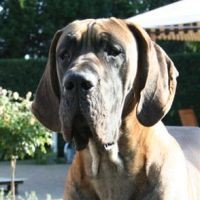


 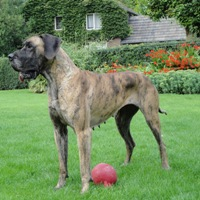
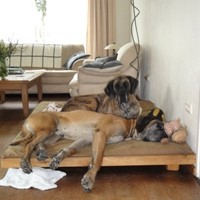
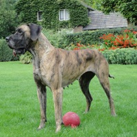
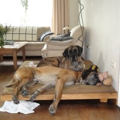
 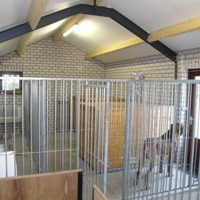
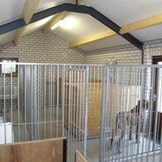

") 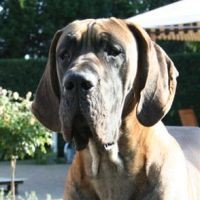
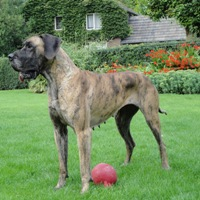
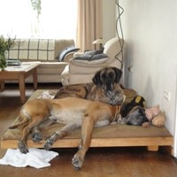
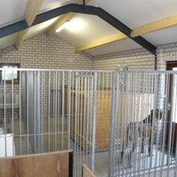
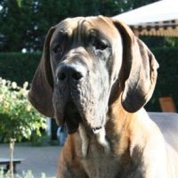
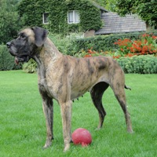
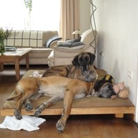
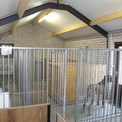